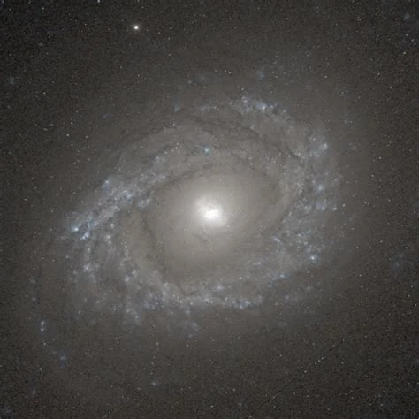

Física e investigación
Desde la espectroscopía galáctica hasta la simulación PET.
FÍSICA · SOFTWARE · DATOS
Soy José Raúl Adeva Alía, físico con perfil computacional. Combino investigación científica, programación, análisis de datos y desarrollo web para abordar problemas desde distintas perspectivas.

01 / PERFIL
Mi formación en Ciencias Físicas en la Universidad Complutense de Madrid me dio una base sólida en matemáticas y modelización. Durante mis prácticas en el CSIC trabajé con simulación y datos PET, y en mi TFG he aplicado herramientas computacionales a la espectroscopía galáctica.
Me gusta moverme entre la física y la programación: entender un problema, encontrar una forma de estudiarlo y construir herramientas para analizarlo. Fuera de la investigación, doy clases de Matemáticas y Física y sigo ampliando mis conocimientos de diseño y desarrollo web con HTML, CSS y JavaScript.
Desde la espectroscopía galáctica hasta la simulación PET.
Programación, análisis y herramientas para investigar.
Inteligencia artificial y computación cuántica.
Explicar Matemáticas y Física de forma clara.
02 / TRABAJO SELECCIONADO
Investigación, programación y experimentación: proyectos donde la física y las herramientas computacionales se encuentran.
Trabajo Fin de Grado sobre NGC 4750 en el contexto de MEGARA/MEGADES. Incluye análisis espectroscópico, tratamiento de cubos IFU y estudio de componentes estelares y emisión ionizada. Calificación: 9,6/10.
Prácticas de investigación en el CSIC centradas en simulación de detectores PET, generación y análisis de datos de eventos y estudio de espectros de energía.
Proyecto académico sobre algoritmos cuánticos y fundamentos de superposición y entrelazamiento. Programación en circuitos cuánticos con Qiskit y ejecución mediante IBM Cloud.
03 / TRAYECTORIA
Escuela Atlántida · Academia Abitaula
Explicación y adaptación de conceptos técnicos a diferentes niveles de conocimiento.
Consejo Superior de Investigaciones Científicas (CSIC)
Análisis e interpretación de datos en un entorno de investigación y uso de simuladores de escáner PET.
Arzobispado de Toledo · Exposición de obras de arte
Control de accesos, gestión de incidencias y garantía de la seguridad del recinto.
04 / CAJA DE HERRAMIENTAS
Lenguajes para programación, automatización y análisis.
Procesamiento, exploración e interpretación de datos.
Modelización, análisis científico y técnicas de aprendizaje automático.
Fundamentos de algoritmos y programación de circuitos cuánticos.
Diseño y construcción de páginas web adaptables.
Base científica aplicada a modelización, análisis y resolución de problemas.
05 / FORMACIÓN
Universidad Complutense de Madrid (UCM)
FinalizadoCFI — Universidad Complutense de Madrid (UCM)
Formación complementaria, en proceso de certificación.
Inglés — B2 · Cambridge English First Certificate
Francés — A2
Italiano — A1
Carnet de conducir B · Vehículo propio · Disponibilidad inmediata
06 / SIGUIENTE PASO
Estoy interesado en oportunidades relacionadas con programación, análisis de datos, software e innovación tecnológica.
Has encontrado el código de acceso. Guárdalo, explorador:
BIGBANGBANANAAhora pulsa MEGARA para desbloquear la sorpresa.
Introduce el código que has encontrado por la galaxia.
Pista: una web estática esconde secretos por diversión, no por seguridad real.